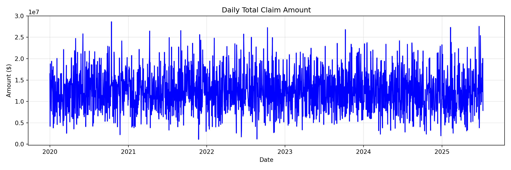
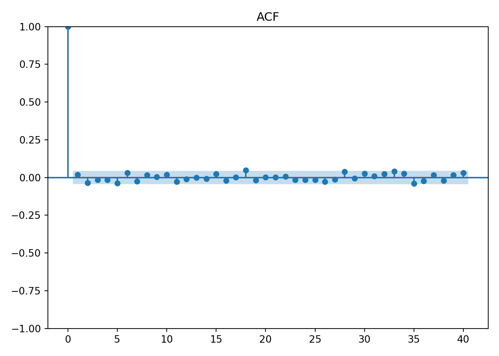
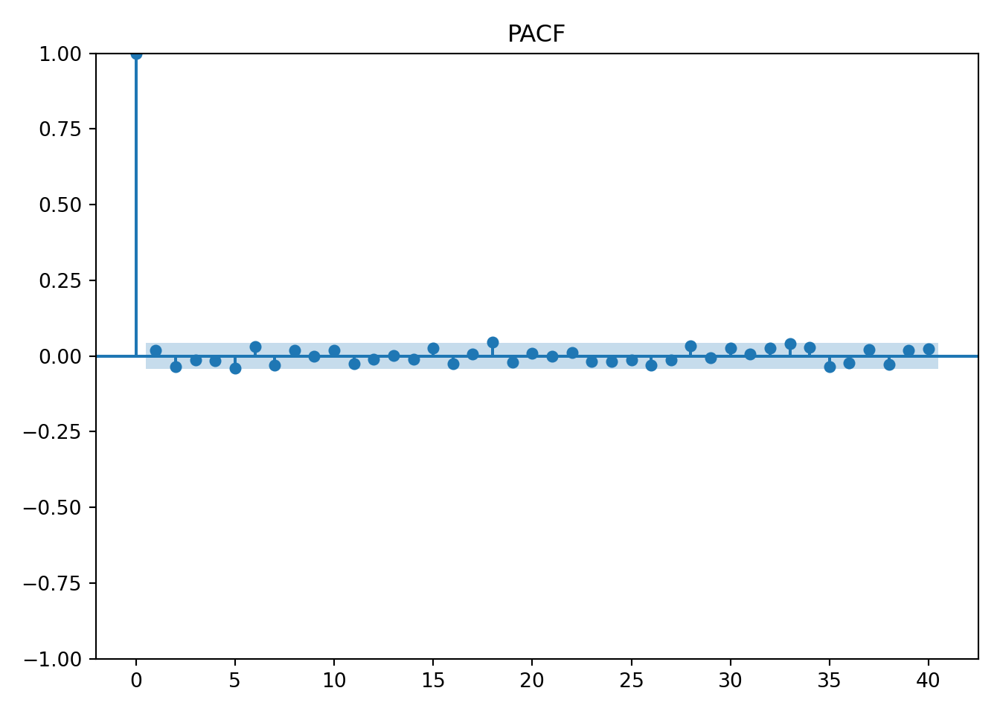
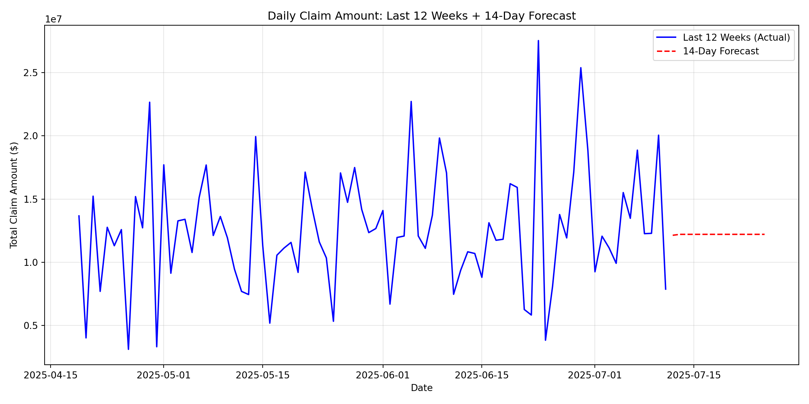

# Libraries
import pandas as pd
import numpy as np
from sklearn.model_selection import train_test_split
from sklearn.preprocessing import StandardScaler, OneHotEncoder
from sklearn.compose import ColumnTransformer
from sklearn.pipeline import Pipeline
from sklearn.ensemble import RandomForestClassifier
from sklearn.linear_model import LogisticRegression
from sklearn.metrics import classification_report
from statsmodels.tsa.statespace.sarimax import SARIMAX
import matplotlib.pyplot as plt
from sklearn.model_selection import GridSearchCV
from statsmodels.graphics.tsaplots import plot_acf, plot_pacf
# Path
path = "~/Downloads/"Lab 8 - Health Claims Fraud Detection and Forecast with Generative AI
Setup
Python
R
# Libraries
library(arules)
library(arulesViz)
library(reticulate)1. Load & Inspect Data
df = pd.read_csv(path + "synthetic_health_claims.csv",
parse_dates=["Claim_Date", "Service_Date", "Policy_Expiration_Date"])
df.dtypesPatient_ID int64
Policy_Number object
Claim_ID int64
Claim_Date datetime64[ns]
Service_Date datetime64[ns]
Policy_Expiration_Date datetime64[ns]
Claim_Amount float64
Patient_Age int64
Patient_Gender object
Patient_City object
Patient_State object
Hospital_ID int64
Provider_Type object
Provider_Specialty object
Provider_City object
Provider_State object
Diagnosis_Code object
Procedure_Code int64
Number_of_Procedures int64
Admission_Type object
Discharge_Type object
Length_of_Stay_Days int64
Service_Type object
Deductible_Amount float64
CoPay_Amount float64
Number_of_Previous_Claims_Patient int64
Number_of_Previous_Claims_Provider int64
Provider_Patient_Distance_Miles float64
Claim_Submitted_Late bool
Is_Fraudulent bool
dtype: objectType Observations
After reviewing the types of all the features in the imported data frame, it was clear to me that the only ones that needed attention were the IDs. Having them as numeric could cause issues when comparing. For unique IDs, it’s better for them to be strings, so I changed them to categorical data.
# Type Coercion
df["Patient_ID"] = df["Patient_ID"].astype("object")
df["Claim_ID"] = df["Claim_ID"].astype("object")
df.shape(20100, 30)2. Clean & Handoff to R
Clean
# Duplicates
print(df.duplicated().sum())28# Missing Values
df.isna().sum().sum()np.int64(0)# Negative Prices
price_cols = ['Claim_Amount', 'CoPay_Amount', 'Deductible_Amount']
for col in price_cols:
print((df[col] < 0).sum())0
0
0df_clean = df.copy()Handoff to R
claims <- py$df_clean
dim(claims)[1] 20100 303. Feature Engineering
df_clean['Cost_per_Day'] = df_clean['Claim_Amount'] / df_clean['Length_of_Stay_Days']
df_clean["Days_Until_Expiration"] = (df_clean["Policy_Expiration_Date"] - df_clean["Service_Date"]).dt.daysRationale
My first addition, Cost_per_Day, is important when comparing costs. Once I realized that we had access to the length of stay, I realized that not all costs should be compared directly. The length of stay is a big factor in how much the cost is, so it was more accurate to break the cost up into cost per day. The second one, Days_Until_Expiration, could be very useful when considering fraud. This measures the difference between two dates and results in a numeric feature. This is more useful in certain algorithms. This feature can reveal how much pressure or what type of situation the person was in when they made the claim. If a person’s policy is about to expire, this can lead to different behavior.
4. LLM-Assisted Classification Code
df_clean['Cost_per_Day'] = df_clean['Cost_per_Day'].replace([np.inf, -np.inf], np.nan)
df_clean['Cost_per_Day'] = df_clean['Cost_per_Day'].fillna(df_clean['Cost_per_Day'].median())
# Verify no infinite or NaN values remain
print("Checking for infinite/NaN values in Cost_per_Day:")Checking for infinite/NaN values in Cost_per_Day:print(f" Infinite values: {np.isinf(df_clean['Cost_per_Day']).sum()}") Infinite values: 0print(f" NaN values: {df_clean['Cost_per_Day'].isna().sum()}") NaN values: 0# Define feature lists
numerical_features = [
'Claim_Amount', 'Patient_Age', 'Length_of_Stay_Days', 'Number_of_Procedures',
'Deductible_Amount', 'CoPay_Amount', 'Provider_Patient_Distance_Miles',
'Number_of_Previous_Claims_Patient', 'Number_of_Previous_Claims_Provider',
'Cost_per_Day', 'Days_Until_Expiration'
]
categorical_features = [
'Patient_Gender', 'Provider_Type', 'Provider_Specialty', 'Service_Type',
'Admission_Type', 'Discharge_Type', 'Diagnosis_Code'
]
binary_features = ['Claim_Submitted_Late']
# Prepare X and y
all_features = numerical_features + categorical_features + binary_features
X = df_clean[all_features].copy() # Use .copy() to avoid SettingWithCopyWarning
y = df_clean['Is_Fraudulent']
# Double-check X has no infinite values
print(f" Total infinite values in X: {np.isinf(X.select_dtypes(include=[np.number])).sum().sum()}") Total infinite values in X: 0# Train-test split with stratification to maintain class proportions
X_train, X_test, y_train, y_test = train_test_split(
X, y, test_size=0.3, random_state=42, stratify=y
)
print(f"Test set size: {X_test.shape}")Test set size: (6030, 19)# Create preprocessor with ColumnTransformer
preprocessor = ColumnTransformer(
transformers=[
('num', StandardScaler(), numerical_features),
('cat', OneHotEncoder(handle_unknown='ignore', sparse_output=False), categorical_features),
('binary', 'passthrough', binary_features)
])
# Create Random Forest pipeline with class balancing
rf_pipeline = Pipeline([
('preprocessor', preprocessor),
('classifier', RandomForestClassifier(
class_weight='balanced', # Handle class imbalance
random_state=42,
n_jobs=-1 # Use all CPU cores for faster training
))
])
# Create Logistic Regression pipeline with class balancing
lr_pipeline = Pipeline([
('preprocessor', preprocessor),
('classifier', LogisticRegression(
class_weight='balanced', # Handle class imbalance
random_state=42,
max_iter=1000 # Increase iterations for convergence
))
])
# Train both models
rf_pipeline.fit(X_train, y_train)Pipeline(steps=[('preprocessor',
ColumnTransformer(transformers=[('num', StandardScaler(),
['Claim_Amount',
'Patient_Age',
'Length_of_Stay_Days',
'Number_of_Procedures',
'Deductible_Amount',
'CoPay_Amount',
'Provider_Patient_Distance_Miles',
'Number_of_Previous_Claims_Patient',
'Number_of_Previous_Claims_Provider',
'Cost_per_Day',
'Days_Until_Expiration']),
('cat',
OneHotEncoder(handle_unknown='ignore',
sparse_output=False),
['Patient_Gender',
'Provider_Type',
'Provider_Specialty',
'Service_Type',
'Admission_Type',
'Discharge_Type',
'Diagnosis_Code']),
('binary', 'passthrough',
['Claim_Submitted_Late'])])),
('classifier',
RandomForestClassifier(class_weight='balanced', n_jobs=-1,
random_state=42))])In a Jupyter environment, please rerun this cell to show the HTML representation or trust the notebook. On GitHub, the HTML representation is unable to render, please try loading this page with nbviewer.org.
Parameters
| steps | [('preprocessor', ...), ('classifier', ...)] | |
| transform_input | None | |
| memory | None | |
| verbose | False |
Parameters
| transformers | [('num', ...), ('cat', ...), ...] | |
| remainder | 'drop' | |
| sparse_threshold | 0.3 | |
| n_jobs | None | |
| transformer_weights | None | |
| verbose | False | |
| verbose_feature_names_out | True | |
| force_int_remainder_cols | 'deprecated' |
['Claim_Amount', 'Patient_Age', 'Length_of_Stay_Days', 'Number_of_Procedures', 'Deductible_Amount', 'CoPay_Amount', 'Provider_Patient_Distance_Miles', 'Number_of_Previous_Claims_Patient', 'Number_of_Previous_Claims_Provider', 'Cost_per_Day', 'Days_Until_Expiration']
Parameters
| copy | True | |
| with_mean | True | |
| with_std | True |
['Patient_Gender', 'Provider_Type', 'Provider_Specialty', 'Service_Type', 'Admission_Type', 'Discharge_Type', 'Diagnosis_Code']
Parameters
| categories | 'auto' | |
| drop | None | |
| sparse_output | False | |
| dtype | <class 'numpy.float64'> | |
| handle_unknown | 'ignore' | |
| min_frequency | None | |
| max_categories | None | |
| feature_name_combiner | 'concat' |
['Claim_Submitted_Late']
passthrough
Parameters
| n_estimators | 100 | |
| criterion | 'gini' | |
| max_depth | None | |
| min_samples_split | 2 | |
| min_samples_leaf | 1 | |
| min_weight_fraction_leaf | 0.0 | |
| max_features | 'sqrt' | |
| max_leaf_nodes | None | |
| min_impurity_decrease | 0.0 | |
| bootstrap | True | |
| oob_score | False | |
| n_jobs | -1 | |
| random_state | 42 | |
| verbose | 0 | |
| warm_start | False | |
| class_weight | 'balanced' | |
| ccp_alpha | 0.0 | |
| max_samples | None | |
| monotonic_cst | None |
lr_pipeline.fit(X_train, y_train)Pipeline(steps=[('preprocessor',
ColumnTransformer(transformers=[('num', StandardScaler(),
['Claim_Amount',
'Patient_Age',
'Length_of_Stay_Days',
'Number_of_Procedures',
'Deductible_Amount',
'CoPay_Amount',
'Provider_Patient_Distance_Miles',
'Number_of_Previous_Claims_Patient',
'Number_of_Previous_Claims_Provider',
'Cost_per_Day',
'Days_Until_Expiration']),
('cat',
OneHotEncoder(handle_unknown='ignore',
sparse_output=False),
['Patient_Gender',
'Provider_Type',
'Provider_Specialty',
'Service_Type',
'Admission_Type',
'Discharge_Type',
'Diagnosis_Code']),
('binary', 'passthrough',
['Claim_Submitted_Late'])])),
('classifier',
LogisticRegression(class_weight='balanced', max_iter=1000,
random_state=42))])In a Jupyter environment, please rerun this cell to show the HTML representation or trust the notebook. On GitHub, the HTML representation is unable to render, please try loading this page with nbviewer.org.
Parameters
| steps | [('preprocessor', ...), ('classifier', ...)] | |
| transform_input | None | |
| memory | None | |
| verbose | False |
Parameters
| transformers | [('num', ...), ('cat', ...), ...] | |
| remainder | 'drop' | |
| sparse_threshold | 0.3 | |
| n_jobs | None | |
| transformer_weights | None | |
| verbose | False | |
| verbose_feature_names_out | True | |
| force_int_remainder_cols | 'deprecated' |
['Claim_Amount', 'Patient_Age', 'Length_of_Stay_Days', 'Number_of_Procedures', 'Deductible_Amount', 'CoPay_Amount', 'Provider_Patient_Distance_Miles', 'Number_of_Previous_Claims_Patient', 'Number_of_Previous_Claims_Provider', 'Cost_per_Day', 'Days_Until_Expiration']
Parameters
| copy | True | |
| with_mean | True | |
| with_std | True |
['Patient_Gender', 'Provider_Type', 'Provider_Specialty', 'Service_Type', 'Admission_Type', 'Discharge_Type', 'Diagnosis_Code']
Parameters
| categories | 'auto' | |
| drop | None | |
| sparse_output | False | |
| dtype | <class 'numpy.float64'> | |
| handle_unknown | 'ignore' | |
| min_frequency | None | |
| max_categories | None | |
| feature_name_combiner | 'concat' |
['Claim_Submitted_Late']
passthrough
Parameters
| penalty | 'l2' | |
| dual | False | |
| tol | 0.0001 | |
| C | 1.0 | |
| fit_intercept | True | |
| intercept_scaling | 1 | |
| class_weight | 'balanced' | |
| random_state | 42 | |
| solver | 'lbfgs' | |
| max_iter | 1000 | |
| multi_class | 'deprecated' | |
| verbose | 0 | |
| warm_start | False | |
| n_jobs | None | |
| l1_ratio | None |
# Get feature names after preprocessing
feature_names = rf_pipeline.named_steps['preprocessor'].get_feature_names_out()
# Extract and display Random Forest feature importance
rf_feature_importance = pd.DataFrame({
'feature': feature_names,
'importance': rf_pipeline.named_steps['classifier'].feature_importances_
}).sort_values('importance', ascending=False).head(10)
print(rf_feature_importance.to_string(index=False)) feature importance
num__Number_of_Procedures 0.106408
num__Claim_Amount 0.103476
num__Provider_Patient_Distance_Miles 0.090036
cat__Provider_Type_Specialist Office 0.076138
num__CoPay_Amount 0.044368
num__Deductible_Amount 0.044034
num__Days_Until_Expiration 0.043814
num__Patient_Age 0.040271
num__Number_of_Previous_Claims_Provider 0.034831
cat__Provider_Specialty_Cardiology 0.024163# Extract and display Logistic Regression feature importance (absolute coefficients)
lr_feature_importance = pd.DataFrame({
'feature': feature_names,
'importance': np.abs(lr_pipeline.named_steps['classifier'].coef_[0])
}).sort_values('importance', ascending=False).head(10)
print(lr_feature_importance.to_string(index=False)) feature importance
cat__Diagnosis_Code_R05 1.139729
cat__Provider_Type_Specialist Office 1.105183
cat__Diagnosis_Code_J02.9 1.059983
cat__Provider_Specialty_Orthopedics 0.843634
cat__Provider_Specialty_Cardiology 0.829898
cat__Service_Type_Inpatient 0.696580
cat__Admission_Type_Urgent 0.543542
cat__Admission_Type_Emergency 0.541447
cat__Admission_Type_Elective 0.537733
cat__Admission_Type_Trauma 0.4232925. Model Training & Evaluation
# Make predictions
y_pred_rf = rf_pipeline.predict(X_test)
y_pred_lr = lr_pipeline.predict(X_test)
# Random Forest report
print(classification_report(y_test, y_pred_rf, target_names=['Non-Fraudulent', 'Fraudulent'])) precision recall f1-score support
Non-Fraudulent 0.85 0.98 0.91 4527
Fraudulent 0.89 0.48 0.62 1503
accuracy 0.86 6030
macro avg 0.87 0.73 0.77 6030
weighted avg 0.86 0.86 0.84 6030# Logistic Regression report
print(classification_report(y_test, y_pred_lr, target_names=['Non-Fraudulent', 'Fraudulent'])) precision recall f1-score support
Non-Fraudulent 0.88 0.74 0.80 4527
Fraudulent 0.47 0.70 0.57 1503
accuracy 0.73 6030
macro avg 0.68 0.72 0.68 6030
weighted avg 0.78 0.73 0.74 6030# parameter grid
lr_param_grid = {
'classifier__C': [0.01, 0.1, 1, 10, 100],
'classifier__solver': ['liblinear', 'lbfgs'],
'classifier__penalty': ['l1', 'l2']
}
# Grid Search
logreg_cv = GridSearchCV(lr_pipeline,
param_grid=lr_param_grid,
cv=5,
scoring='accuracy'
)
logreg_cv.fit(X_train, y_train)GridSearchCV(cv=5,
estimator=Pipeline(steps=[('preprocessor',
ColumnTransformer(transformers=[('num',
StandardScaler(),
['Claim_Amount',
'Patient_Age',
'Length_of_Stay_Days',
'Number_of_Procedures',
'Deductible_Amount',
'CoPay_Amount',
'Provider_Patient_Distance_Miles',
'Number_of_Previous_Claims_Patient',
'Number_of_Previous_Claims_Provider',
'Cost_per_Day',
'D...
'Service_Type',
'Admission_Type',
'Discharge_Type',
'Diagnosis_Code']),
('binary',
'passthrough',
['Claim_Submitted_Late'])])),
('classifier',
LogisticRegression(class_weight='balanced',
max_iter=1000,
random_state=42))]),
param_grid={'classifier__C': [0.01, 0.1, 1, 10, 100],
'classifier__penalty': ['l1', 'l2'],
'classifier__solver': ['liblinear', 'lbfgs']},
scoring='accuracy')In a Jupyter environment, please rerun this cell to show the HTML representation or trust the notebook. On GitHub, the HTML representation is unable to render, please try loading this page with nbviewer.org.
Parameters
| estimator | Pipeline(step...m_state=42))]) | |
| param_grid | {'classifier__C': [0.01, 0.1, ...], 'classifier__penalty': ['l1', 'l2'], 'classifier__solver': ['liblinear', 'lbfgs']} | |
| scoring | 'accuracy' | |
| n_jobs | None | |
| refit | True | |
| cv | 5 | |
| verbose | 0 | |
| pre_dispatch | '2*n_jobs' | |
| error_score | nan | |
| return_train_score | False |
Parameters
| transformers | [('num', ...), ('cat', ...), ...] | |
| remainder | 'drop' | |
| sparse_threshold | 0.3 | |
| n_jobs | None | |
| transformer_weights | None | |
| verbose | False | |
| verbose_feature_names_out | True | |
| force_int_remainder_cols | 'deprecated' |
['Claim_Amount', 'Patient_Age', 'Length_of_Stay_Days', 'Number_of_Procedures', 'Deductible_Amount', 'CoPay_Amount', 'Provider_Patient_Distance_Miles', 'Number_of_Previous_Claims_Patient', 'Number_of_Previous_Claims_Provider', 'Cost_per_Day', 'Days_Until_Expiration']
Parameters
| copy | True | |
| with_mean | True | |
| with_std | True |
['Patient_Gender', 'Provider_Type', 'Provider_Specialty', 'Service_Type', 'Admission_Type', 'Discharge_Type', 'Diagnosis_Code']
Parameters
| categories | 'auto' | |
| drop | None | |
| sparse_output | False | |
| dtype | <class 'numpy.float64'> | |
| handle_unknown | 'ignore' | |
| min_frequency | None | |
| max_categories | None | |
| feature_name_combiner | 'concat' |
['Claim_Submitted_Late']
passthrough
Parameters
| penalty | 'l2' | |
| dual | False | |
| tol | 0.0001 | |
| C | 0.1 | |
| fit_intercept | True | |
| intercept_scaling | 1 | |
| class_weight | 'balanced' | |
| random_state | 42 | |
| solver | 'lbfgs' | |
| max_iter | 1000 | |
| multi_class | 'deprecated' | |
| verbose | 0 | |
| warm_start | False | |
| n_jobs | None | |
| l1_ratio | None |
print("Best Parameters Found: ", logreg_cv.best_params_)Best Parameters Found: {'classifier__C': 0.1, 'classifier__penalty': 'l2', 'classifier__solver': 'lbfgs'}y_pred_lr_tuned = logreg_cv.best_estimator_.predict(X_test)
print(classification_report(y_test, y_pred_lr_tuned, target_names=['Non-Fraudulent', 'Fraudulent'])) precision recall f1-score support
Non-Fraudulent 0.88 0.74 0.81 4527
Fraudulent 0.47 0.70 0.57 1503
accuracy 0.73 6030
macro avg 0.68 0.72 0.69 6030
weighted avg 0.78 0.73 0.75 6030Discussion
Initially, I thought that false positives would be more harmful, but I believe false negatives are costlier. I first considered what a false positive would do. A false positive could result in a waste of resources toward something that wasn’t true. I also strongly considered how it would affect the person who made the claim if they were falsely accused. However, when it comes to cost, false negatives are the clear choice because an institution could miss out on thousands upon thousands of dollars if they do not detect fraud.
6. Aggregation & Diagnostics
# Aggregate to daily totals
daily_claims = df_clean.groupby('Claim_Date')['Claim_Amount'].sum().sort_index()
len(daily_claims)2019# Time series plot
plt.figure(figsize=(12, 4))
plt.plot(daily_claims.index, daily_claims.values, color='blue')
plt.title('Daily Total Claim Amount')
plt.xlabel('Date')
plt.ylabel('Amount ($)')
plt.grid(True, alpha=0.3)
plt.tight_layout()
plt.show()
# ACF plot
plot_acf(daily_claims, lags=40)
plt.title('ACF')
plt.tight_layout()
plt.show()
# PACF plot
plot_pacf(daily_claims, lags=40)
plt.title('PACF')
plt.tight_layout()
plt.show()
Interpretation
Based on the graphs, there will be little to no seasonality or trends.
7. LLM-Assisted ARIMA Code
# Fit SARIMA model
sarima_model = SARIMAX(
daily_claims,
order=(1, 1, 1), # (p, d, q) - ARIMA parameters
seasonal_order=(0, 0, 0, 0) # (P, D, Q, s) - no seasonality for now
).fit()
# Forecast next 14 days
forecast = sarima_model.get_forecast(steps=14)
forecast_mean = forecast.predicted_mean
forecast_ci = forecast.conf_int(alpha=0.05) # 95% confidence interval8. Forecast Plot & Interpretation
last_12_weeks = daily_claims.iloc[-84:] # 84 days = 12 weeks
plt.figure(figsize=(12, 6))
plt.plot(last_12_weeks.index, last_12_weeks.values, label='Last 12 Weeks (Actual)', color='blue')
plt.plot(forecast_mean.index, forecast_mean.values, label='14-Day Forecast', color='red', linestyle='--')
plt.title('Daily Claim Amount: Last 12 Weeks + 14-Day Forecast')
plt.xlabel('Date')
plt.ylabel('Total Claim Amount ($)')
plt.legend()
plt.grid(True, alpha=0.3)
plt.tight_layout()
plt.show()
9. Association Rules
hospital_baskets <- split(claims$Procedure_Code, claims$Hospital_ID)
Trx <- as(hospital_baskets, "transactions")
rules <- apriori(Trx,
parameter = list(
support = 0.05,
confidence = 0.8,
minlen = 2,
maxlen = 5
))Apriori
Parameter specification:
confidence minval smax arem aval originalSupport maxtime support minlen
0.8 0.1 1 none FALSE TRUE 5 0.05 2
maxlen target ext
5 rules TRUE
Algorithmic control:
filter tree heap memopt load sort verbose
0.1 TRUE TRUE FALSE TRUE 2 TRUE
Absolute minimum support count: 50
set item appearances ...[0 item(s)] done [0.00s].
set transactions ...[20 item(s), 1000 transaction(s)] done [0.00s].
sorting and recoding items ... [20 item(s)] done [0.00s].
creating transaction tree ... done [0.00s].
checking subsets of size 1 2 3 4 5 done [0.01s].
writing ... [98 rule(s)] done [0.00s].
creating S4 object ... done [0.00s].print(length(rules))[1] 98Top 5 Rules
- {93000,93307,93458,93610} -> {99203}
- {93000,93307,93610,99283} -> {99203}
- {93000,93307,93610,99284} -> {99203}
- {93306,99214,99283,99284} -> {99213}
- {71046,80053,93307,99283} -> {99203}
Interpretation
Many of these rules involved procedure codes on the right-hand side that have new patient or existing patient codes. For example, 99203 is for a new patient visit that is relatively low risk. The top rule includes LHS procedures that have to do with the heart. This strategy of association could be analyzed further to identify oddities. If a rule is detected that does not make sense, it should be investigated because if this rule is popular enough, it will show up in the associations and might lead to multiple cases of fraud.
10. Reflection & Next Steps
LLM Experience
Using an LLM was far from a problem-free experience. There were many things that worked well. They gave a lot of information in code; a trend I observed was that the LLM often offered more than what was even originally asked for. This could sometimes become a frustration because I wanted it to give me a very simple answer. However, it was very convenient for it to show just how fast its knowledge base is. I think it worked well to ask it to explain everything back to you that you wanted to do. They pitfall I often see, and have fallen into, is I will tell it to code in the first prompt. This is usually where I get errors because it does not understand the goal. So, using the first prompt to explain the situation and ask it specifically not to code but to simply offer an idea of a solution was very helpful. I also asked it to ask clarifying questions. LLMs often rush into tasks without having the full picture. But it is very good at telling you where its gaps and knowledge are, but only if you ask it. I often validated the LLM’s code against my previous code. I had notes from class and labs that I could check against the LLM code.
Limitations of Classifier Model and Forecast
The first limitation is that there was no detected seasonality or trend; this made it very difficult for the forecast model to understand how to forecast. For the classifier’s use, I think the biggest limitation was the features. There was a lot of emphasis on codes and overall a bloated dataset. I also think there was a limitation in how much information there was on the actual person filing the claim or their family. I often think that there are common other things that can play the biggest factor.
Maintenance Proposal
Maintaining accurate models would be very important. Compared to other datasets and situations, I believe that insurance fraud is likely not in need of a high amount of maintenance. But it is still necessary because of different strategies and fraud being implemented. There aren’t necessarily seasons or yearly events that can be easily identified as times where the models need maintenance. So it would be more beneficial to do it on a scheduled time of once a month. The maintainer could also track national fraud alerts to have a better idea if a model needs spontaneous retraining. Precision drift would be a great metric to very quickly observe that will explain how much a model has lost its accuracy. I believe once this drops more than 0.03, then it should be retrained. Forecast error is another easy metric to denote how much the forecast is off. However, it’s important to consider that an increase in error is not a reason to panic because there can be large fluctuations with the forecast.
2 Next Steps
Real-time anomaly detection would be a very valuable product to offer. The time between a claim and whether or not it is recognized as fraud is very important—the shorter the better. This system could be built where once a new claim is added to the database, it is automatically predictively classified as fraudulent and flagged for potential fraud. One other additional feature would be to add new features to the data that have to do with external provider ratings. The dataset is relatively limited. Adding more information, particularly about the provider, could help the model.
Biblical Worldview Implications
The Bible promotes many values that will support the identification of fraud. Honesty is highly valued, and bringing people to justice who violate honesty and try to take advantage of others is important. Stewardship is also highly valued when it comes to money in the Bible. The person responsible for these models also has a high amount of honesty and stewardship expected of them. Using these models comes with a power of accusation, which should be taken seriously.
AI Usage Appendix
Classification Code
Prompts
You are a data scientist for a high level insurance company. The goal is to train 2 classifiers out of this list: Random Forest, Logistic Regression, Decision Tree, and Naive Bayes. Make a suggestion and offer startegies but do not code.
Let’s do random forrest and logistic regression. Follow this general format and startegy (I pasted in an example of previous code I had written using classifiers). Here are the features: Patient_ID, Policy_Number, Claim_ID, Claim_Date, Service_Date, Policy_Expiration_Date, Claim_Amount, Patient_Age, Patient_Gender, Patient_City, Patient_State, Hospital_ID, Provider_Type, Provider_Specialty, Provider_City, Provider_State, Diagnosis_Code, Procedure_Code, Number_of_Procedures, Admission_Type, Discharge_Type, Length_of_Stay_Days, Service_Type, Deductible_Amount, CoPay_Amount, Number_of_Previous_Claims_Patient, Number_of_Previous_Claims_Provider, Provider_Patient_Distance_Miles, Claim_Submitted_Late, Is_Fraudulent. Split into numeric, categorical, and other features. Scale and one hot encode lists. by preprocessing. Target = Is_Fraudulent. Print results and top 10 features.
Final Raw Response
import numpy as np
from sklearn.model_selection import train_test_split
from sklearn.preprocessing import StandardScaler, OneHotEncoder
from sklearn.compose import ColumnTransformer
from sklearn.pipeline import Pipeline
from sklearn.ensemble import RandomForestClassifier
from sklearn.linear_model import LogisticRegression
from sklearn.metrics import classification_report
# Define feature lists
numerical_features = [
'Claim_Amount', 'Patient_Age', 'Length_of_Stay_Days', 'Number_of_Procedures',
'Deductible_Amount', 'CoPay_Amount', 'Provider_Patient_Distance_Miles',
'Number_of_Previous_Claims_Patient', 'Number_of_Previous_Claims_Provider',
'Cost_per_Day', 'Days_Until_Expiration'
]
categorical_features = [
'Patient_Gender', 'Provider_Type', 'Provider_Specialty', 'Service_Type',
'Admission_Type', 'Discharge_Type', 'Diagnosis_Code'
]
binary_features = ['Claim_Submitted_Late']
# Prepare X and y
all_features = numerical_features + categorical_features + binary_features
X = df_clean[all_features]
y = df_clean['Is_Fraudulent']
# Train-test split
X_train, X_test, y_train, y_test = train_test_split(
X, y, test_size=0.3, random_state=42, stratify=y
)
# Create preprocessor
preprocessor = ColumnTransformer(
transformers=[
('num', StandardScaler(), numerical_features),
('cat', OneHotEncoder(handle_unknown='ignore', sparse_output=False), categorical_features),
('binary', 'passthrough', binary_features)
])
# Create pipelines with class_weight='balanced'
rf_pipeline = Pipeline([
('preprocessor', preprocessor),
('classifier', RandomForestClassifier(class_weight='balanced', random_state=42, n_jobs=-1))
])
lr_pipeline = Pipeline([
('preprocessor', preprocessor),
('classifier', LogisticRegression(class_weight='balanced', random_state=42, max_iter=1000))
])
# Train models
rf_pipeline.fit(X_train, y_train)
lr_pipeline.fit(X_train, y_train)
# Predictions
y_pred_rf = rf_pipeline.predict(X_test)
y_pred_lr = lr_pipeline.predict(X_test)
# Evaluation
print("="*50)
print("RANDOM FOREST CLASSIFICATION REPORT")
print("="*50)
print(classification_report(y_test, y_pred_rf))
print("\n" + "="*50)
print("LOGISTIC REGRESSION CLASSIFICATION REPORT")
print("="*50)
print(classification_report(y_test, y_pred_lr))
# Get feature names after preprocessing
feature_names = rf_pipeline.named_steps['preprocessor'].get_feature_names_out()
# Random Forest Feature Importance
rf_feature_importance = pd.DataFrame({
'feature': feature_names,
'importance': rf_pipeline.named_steps['classifier'].feature_importances_
}).sort_values('importance', ascending=False).head(10)
print("\n" + "="*50)
print("TOP 10 FEATURES - RANDOM FOREST")
print("="*50)
print(rf_feature_importance.to_string(index=False))
# Logistic Regression Feature Importance
lr_feature_importance = pd.DataFrame({
'feature': feature_names,
'importance': np.abs(lr_pipeline.named_steps['classifier'].coef_[0])
}).sort_values('importance', ascending=False).head(10)
print("\n" + "="*50)
print("TOP 10 FEATURES - LOGISTIC REGRESSION")
print("="*50)
print(lr_feature_importance.to_string(index=False))Corrections
- Move libraries
- Remove extra print statements
ARIMA Code
Prompts
The goal is to generate a basic SARIMA model. I have already grouped by a variable called daily_claims. Make a suggestion and offer startegies but do not code. Follow this general format and startegy (I pasted in an example of previous code I had written using classifiers). DEscribe what you are going to do before coding
No seasonlity was detectced. Write code predicting the next 14 days with 95 percent confidence
Final Raw Response
from statsmodels.tsa.statespace.sarimax import SARIMAX
import matplotlib.pyplot as plt
print("="*70)
print("STEP 7: SARIMA MODEL & FORECAST")
print("="*70)
# Fit SARIMA model
sarima_model = SARIMAX(
daily_claims,
order=(1, 1, 1), # (p, d, q) - ARIMA parameters
seasonal_order=(0, 0, 0, 0) # (P, D, Q, s) - no seasonality for now
).fit()
# Forecast next 14 days
forecast = sarima_model.get_forecast(steps=14)
forecast_mean = forecast.predicted_mean
forecast_ci = forecast.conf_int(alpha=0.05) # 95% confidence interval
Corrections
- Move libraries
- Remove print statements
Comments
There is little to no seasonality or trends.